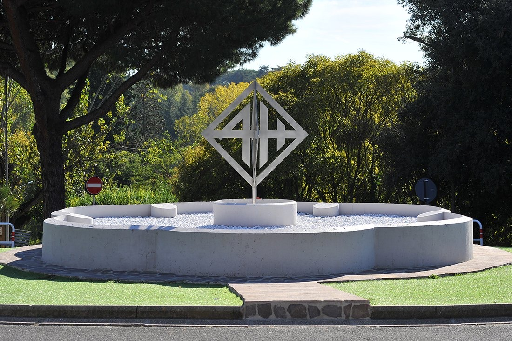
Aurelia Hospital
Struttura polispecialistica con DEA di I livello, elisuperficie operativa 24 ore su 24 e 291 posti letto autorizzati: uno dei presidi sanitari di riferimento della Capitale.
Scopri la strutturaGarofalo Health Care · Italia
Il primo e unico Gruppo sanitario privato italiano quotato su Euronext STAR Milan. Trentanove strutture, otto regioni e una sola idea di cura: mettere la persona al centro, con percorsi clinici chiari e contatti diretti.
Orientarsi
Scegli tipologia e regione: ti portiamo direttamente alle strutture del Gruppo che rispondono alle tue esigenze.
Esplora tutte le 31 schede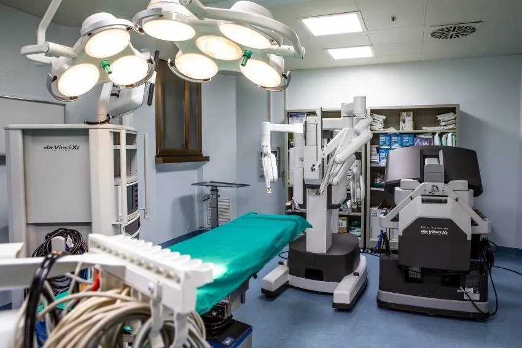
Accesso rapido
GHC / 03Trova la struttura, prepara l’accesso e conosci i tuoi diritti.
Risultati, documenti e governance del Gruppo quotato.
Opportunità, ricerca e percorsi di crescita nella rete GHC.
Chi siamo
Garofalo Health Care nasce dall’intuizione di un chirurgo, Raffaele Garofalo, e dalla crescita di una famiglia che dagli anni Cinquanta ha costruito una rete di strutture sanitarie di alta qualità. Oggi il Gruppo opera in otto regioni con ospedali, case di cura, centri riabilitativi, poliambulatori e centri diagnostici.
La quotazione su Euronext STAR Milan, nel 2018, ha dato continuità a un modello che coniuga la cura del paziente, l’investimento in tecnologie e persone, la solidità dei conti e la trasparenza verso il mercato.

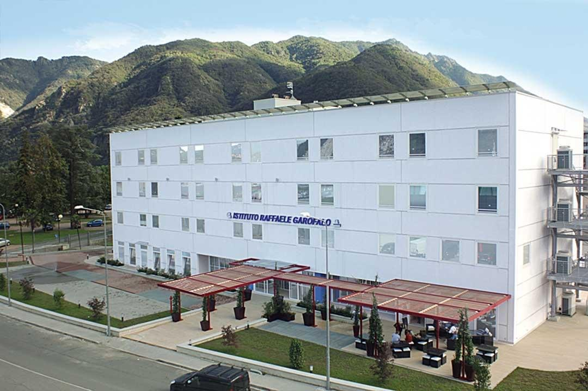
Il modello di cura
Ogni struttura del Gruppo conserva la propria identità e la propria storia, ma condivide standard clinici, percorsi di appropriatezza e una cultura comune della sicurezza.
Avanguardia clinica
Robotica, diagnostica ad alta precisione e riabilitazione specialistica. L’innovazione nelle strutture del Gruppo non è un esercizio tecnologico: è un percorso clinico progettato intorno alla persona.
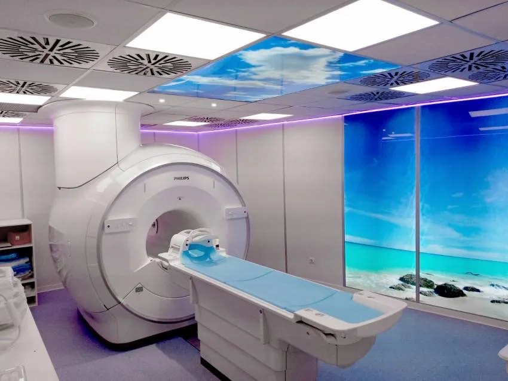
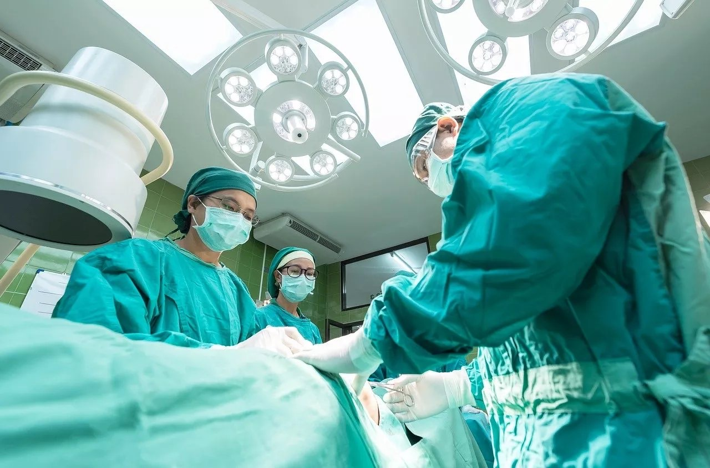
Cardiochirurgia robotica a Modena e ortopedia robotica a Verona, con il CORE e un’attività di formazione per chirurghi provenienti da tutta Europa.
Hesperia HospitalRisonanza magnetica Total Body 3 Tesla, TAC 128 slice, PET-CT e mammografia con tomosintesi nelle strutture diagnostiche del Gruppo.
CMSR Veneto MedicaRiabilitazione cardiovascolare e nutrizionale a Villa Garda, riabilitazione intensiva all’Istituto Raffaele Garofalo, con équipe multidisciplinari.
Casa di Cura Villa GardaUna rete residenziale e riabilitativa tra Liguria e Lazio, con percorsi per disturbi psichiatrici, dell’alimentazione e disabilità acquisita.
Gruppo Fides MedicaDentro il Gruppo
Laboratori, diagnostica per immagini, blocchi operatori e ambulatori: le immagini raccontano il lavoro quotidiano delle strutture del Gruppo.
Galleria fotografica


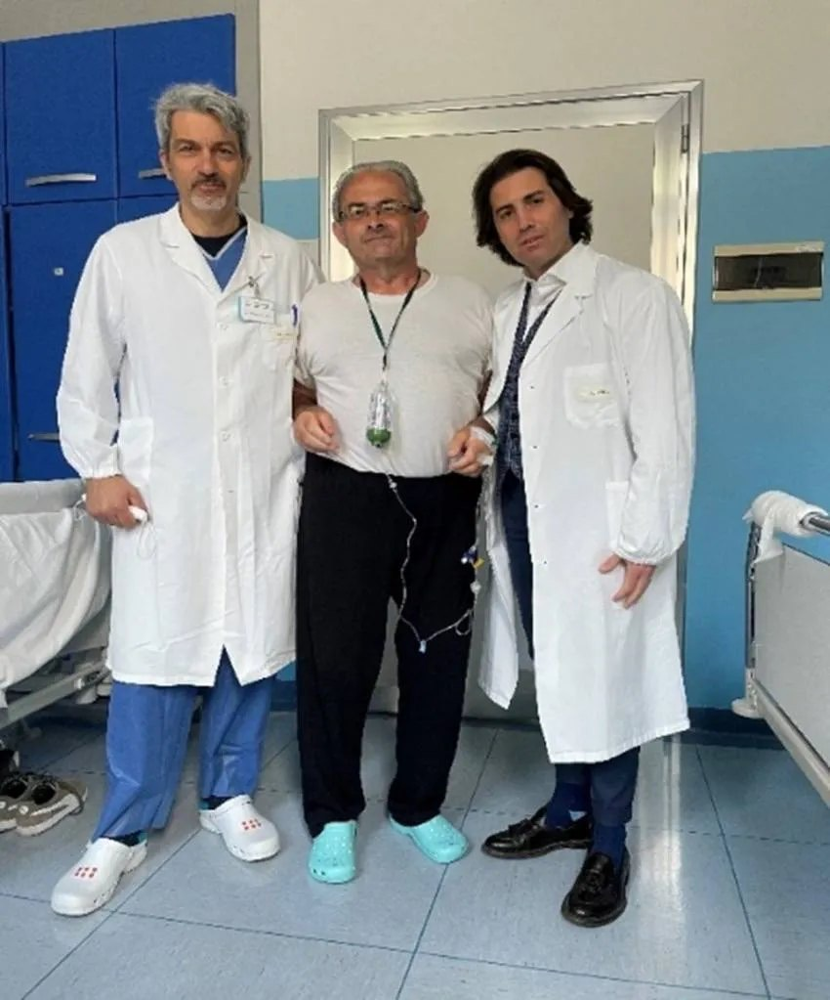

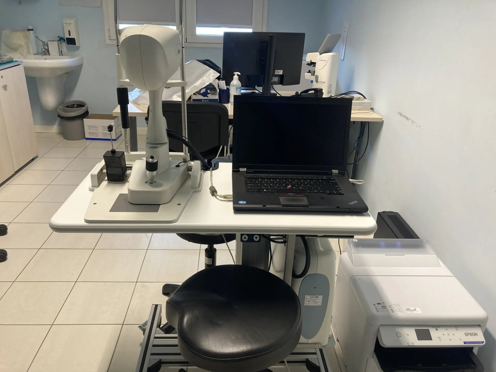
Le strutture
Dalle grandi città ai territori più piccoli, il Gruppo porta competenze specialistiche e tecnologie avanzate dove le persone vivono.
Tutte le 31 schede
Struttura polispecialistica con DEA di I livello, elisuperficie operativa 24 ore su 24 e 291 posti letto autorizzati: uno dei presidi sanitari di riferimento della Capitale.
Scopri la struttura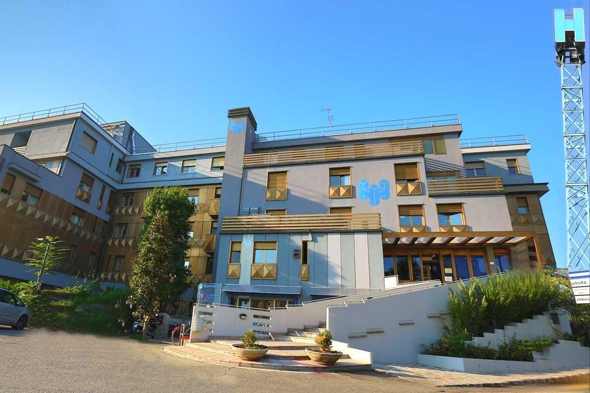
Centro toraco-cardiovascolare di rilevanza internazionale, primo in Italia per il più basso tasso di mortalità in cardiochirurgia secondo il Programma Esiti Nazionale.
Scopri la struttura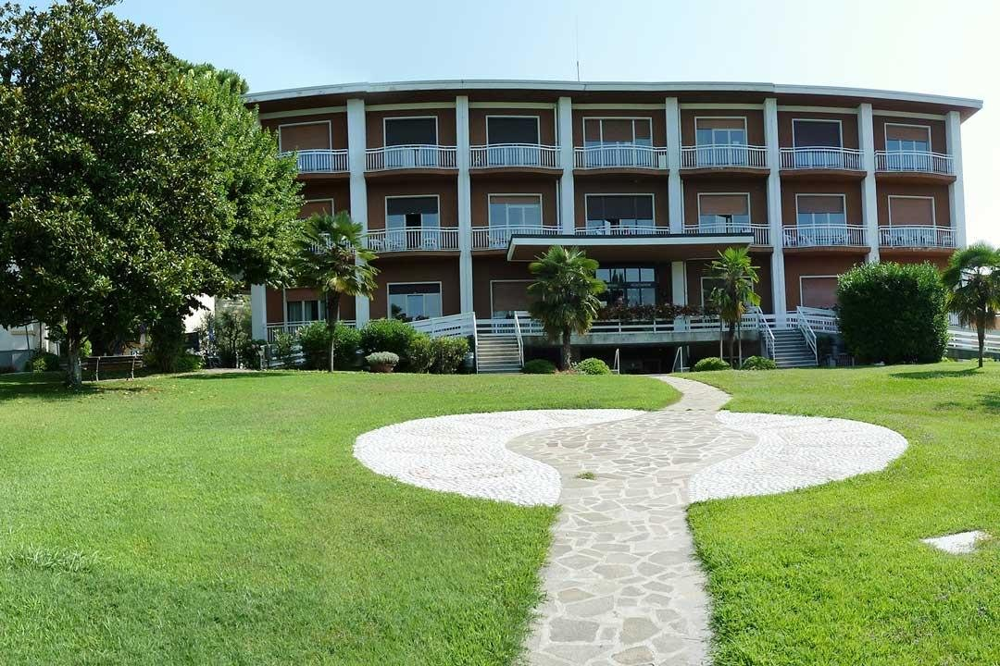
Centro di riferimento per la riabilitazione cardiovascolare e per i disturbi dell’alimentazione, con un’unità diretta dal dr. Riccardo Dalle Grave.
Scopri la strutturaIl Gruppo conta 39 strutture: alcune schede rappresentano gruppi multi-sede, come Fides in Liguria, GVDR in Veneto e la rete Dalla Rosa Prati.
Esplora per regioneCliniche private
Ospedali, case di cura, poliambulatori, centri diagnostici e riabilitativi privati, molti dei quali accreditati con il Servizio Sanitario Nazionale. Scegli la struttura, chiama il centralino o scrivi direttamente.

Contatti diretti
Orientamento guidato
Regione, città e servizio: in pochi passaggi vedi le strutture del Gruppo compatibili e puoi chiamare direttamente il presidio giusto.
Trova la struttura giustaRegione e città, oppure tutta l’Italia.
Area clinica e servizio di cui hai bisogno.
Telefono, indirizzo e indicazioni della struttura.
Presenza territoriale
Dalla Lombardia al Friuli-Venezia Giulia, dal Piemonte al Lazio: una presenza costruita nel tempo, struttura dopo struttura.
Esplora zone e cittàServizi e specialità
Dalla chirurgia alla riabilitazione, dalla diagnostica alla salute mentale: oltre 75 servizi specialistici erogati dalle strutture del Gruppo, con la possibilità di trovare quello più vicino al tuo territorio.
Tutti i serviziConvenzioni e partnership
Compagnie assicurative, fondi sanitari, aziende, enti e istituzioni: costruiamo accordi di accesso alla rete con un referente unico e un metodo chiaro.
Investor Relations · FY2025
Dati consolidati dell’esercizio chiuso al 31 dicembre 2025. EBITDA adjusted con margine del 16,6%.
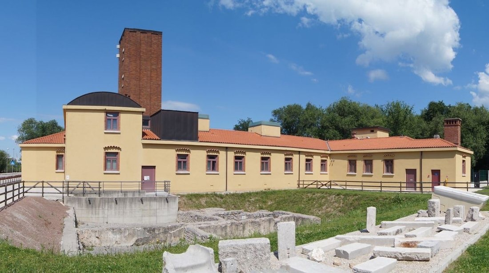
Sostenibilità
Energia, rifiuti, mobilità, formazione e salute delle comunità: la sostenibilità è per GHC una dimensione concreta della qualità clinica.
News ed eventi
Acquisizioni, ricerca, prevenzione e territorio: le notizie più recenti da GHC.
Tutte le news
Una nuova importante tappa nel percorso di crescita di GHC: la storica casa di cura di Cesena, attiva dal 1947, entra nella rete del Gruppo.
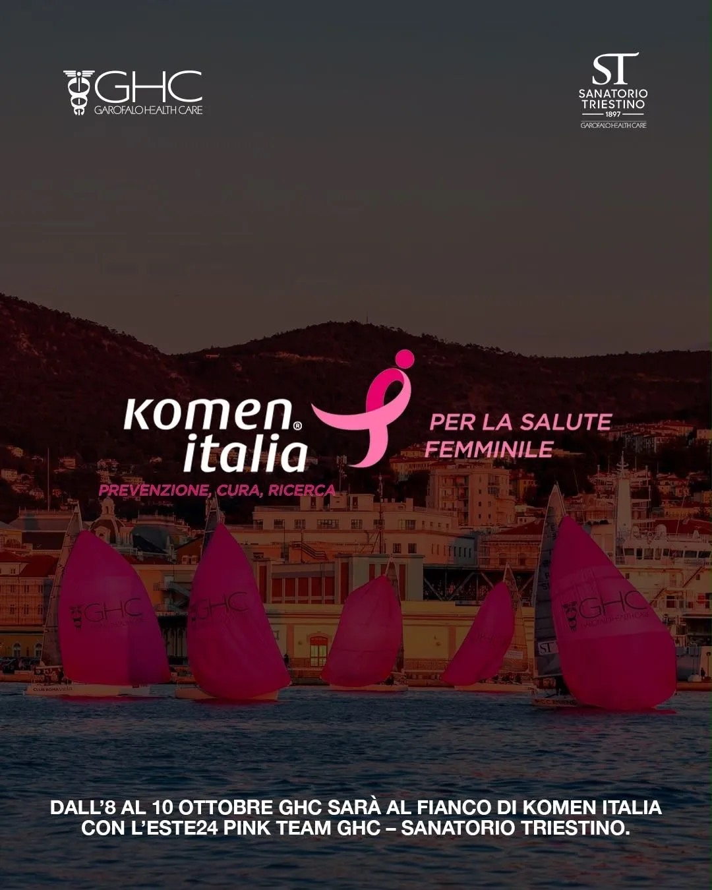
Dall’8 al 10 ottobre, nel Golfo di Trieste, GHC è stata al fianco di Komen Italia con l’Este24 Pink Team GHC – Sanatorio Triestino.
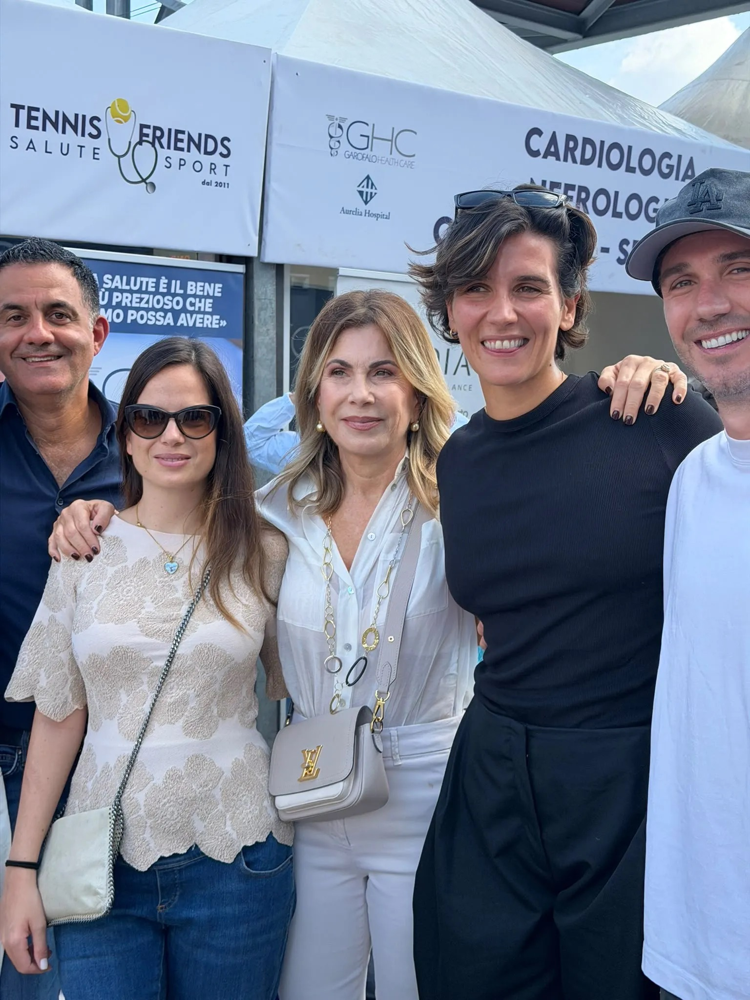
Una manifestazione dedicata alla cultura della prevenzione attraverso l’incontro tra salute, informazione e attività sportiva.
La vita del Gruppo
Dagli eventi corporate alle iniziative di prevenzione, dalle terme ai progetti di inclusione: le immagini raccontano il Gruppo oltre le strutture.
Tutte le fotografie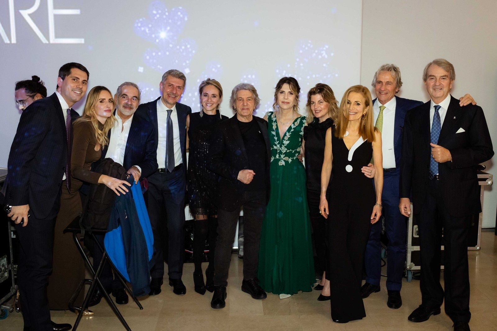
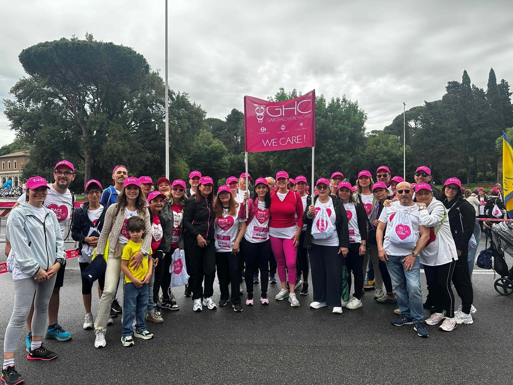
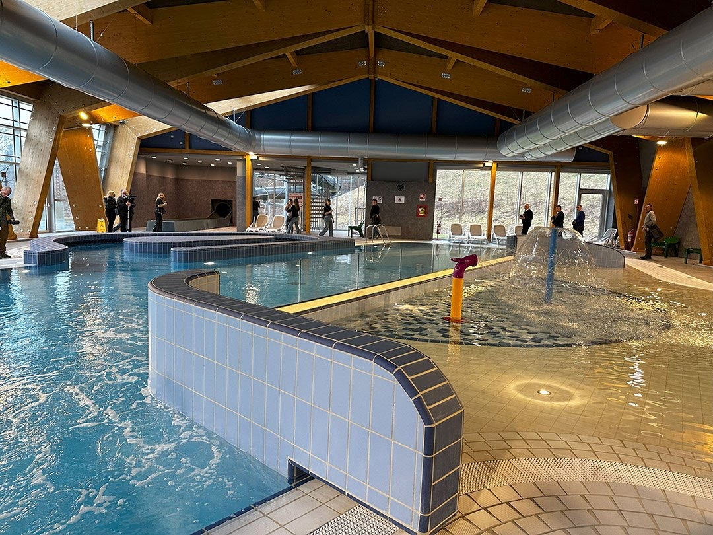
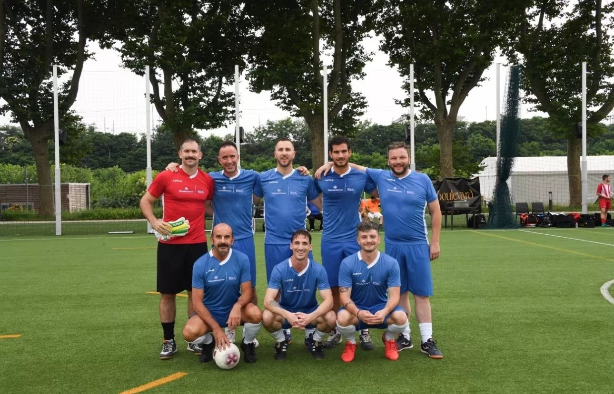
Il Gruppo GHC
Siamo a disposizione per orientarti verso la struttura giusta, per richieste istituzionali e per informazioni sulle opportunità professionali.
Preferisci parlare con noi? +39 06 684891